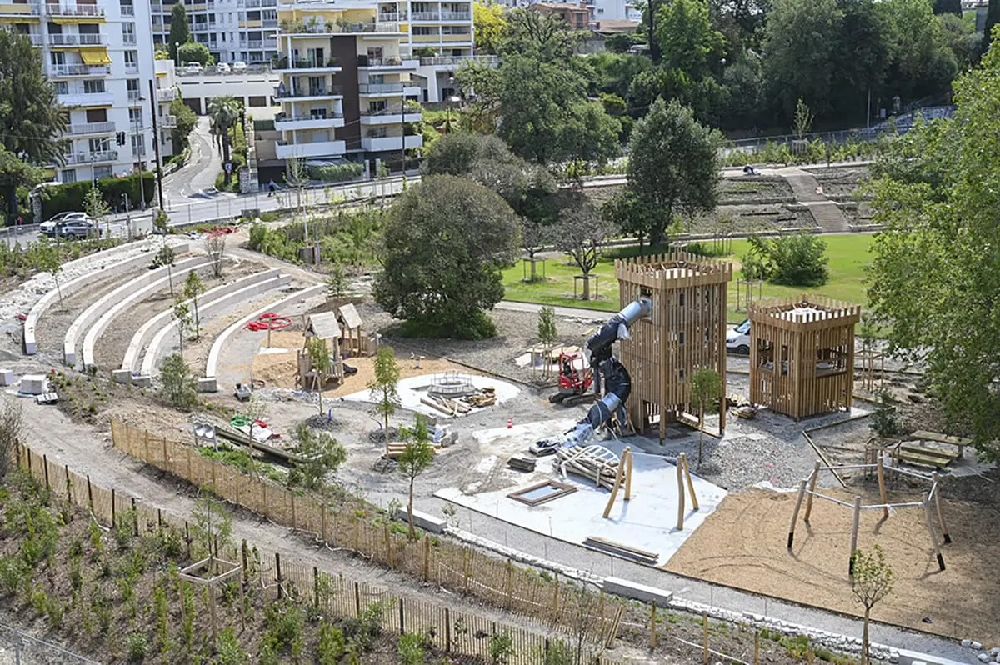
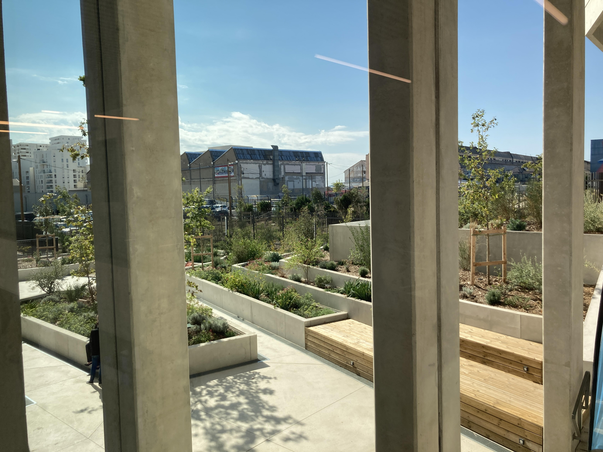
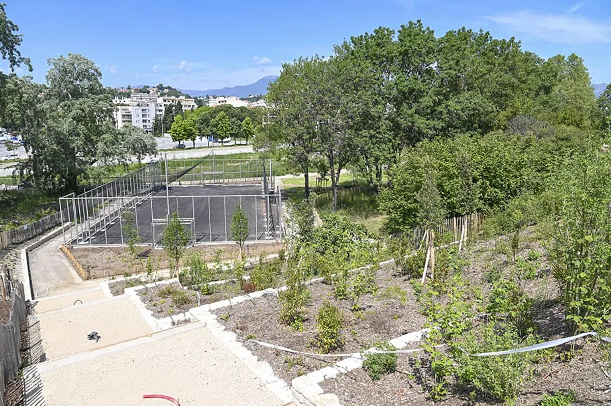
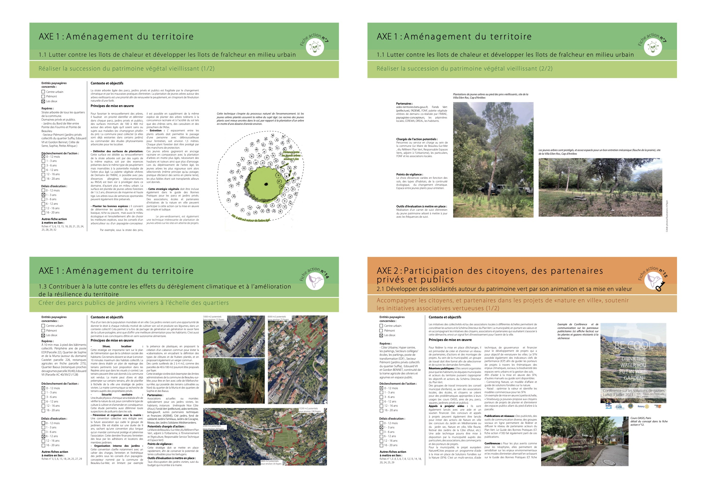
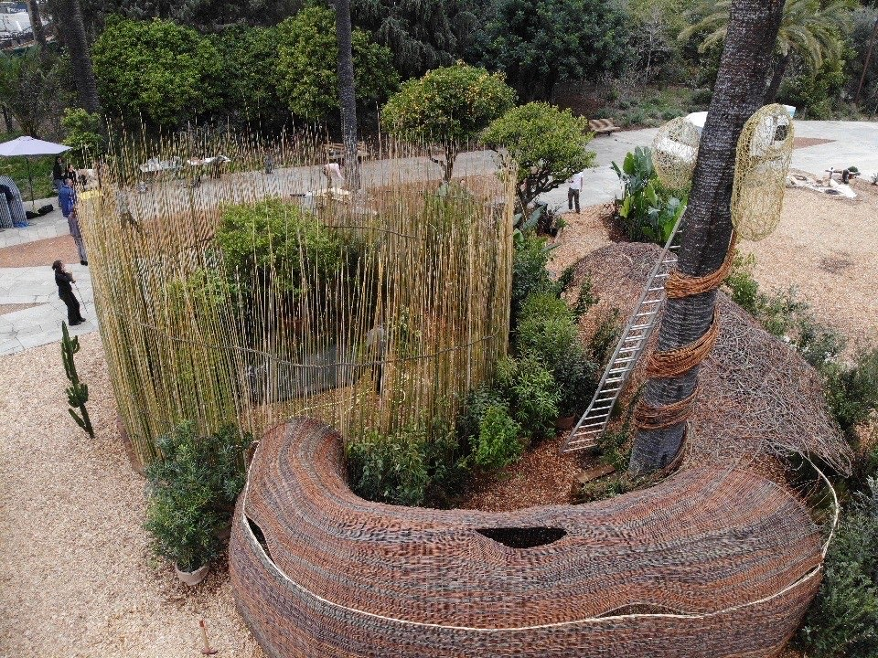
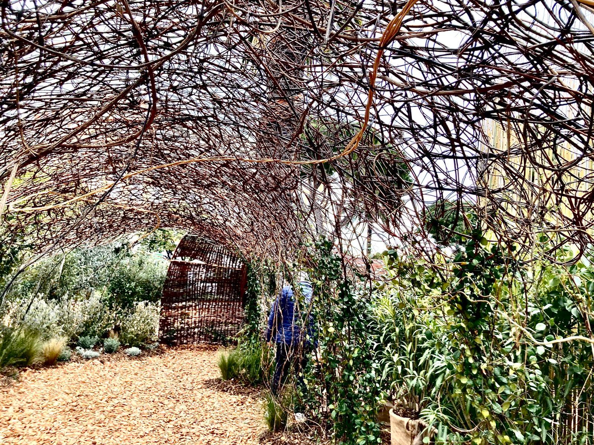

MOE complète
Parc des Canebiers
Cagnes-sur-Mer · 2,7 ha
Berges actives, continuités écologiques et dispositif anti-crues. Renaturation complète d'un parc public.
Ingénierie paysagère publique
Pepin Paysages conçoit et réalise des parcs, jardins publics et plans guides pour les collectivités méditerranéennes — de l'espace de proximité au grand territoire.
De la place de quartier au plan guide territorial. Chaque projet est suivi de la conception à la réception.

Cagnes-sur-Mer · 2,7 ha
Berges actives, continuités écologiques et dispositif anti-crues. Renaturation complète d'un parc public.

Marseille · 29 ha
Stratégie eau et végétation sur le périmètre Euroméditerranée. Phase PRO/ACT en cours.

Euromed Marseille
Verger méditerranéen, gestion différenciée, plan lumière compatible faune. Livré en 2025.

Alpes-Maritimes
Plans verts 2050 — schéma directeur de l'eau, fiches techniques micro-centralités. Diagnostic + scénarios.

Aigues-Mortes · 5 ha
Reconfiguration des parcours visiteurs sur un site sensible. Gestion des eaux saumâtres, respect RAMSAR.

La Gaude
AMO paysage pour la Métropole Nice Côte d'Azur. Intégration paysagère d'un réservoir stratégique.
Des concepts qui marquent, des jurys qui valident.
1er prix professionnel
Jardin « Entre-là » — installation vivante croisant vannerie paysagère, plantes méditerranéennes et immersion sensible. Budget 120 k€.
Finaliste — 2e position
Concept « À TABLE ! » autour des usages collectifs, de l'alimentaire et de la biodiversité urbaine. Budget 250 k€.
Lauréat · Podgorica, Monténégro
Scénario d'aménagement des berges fondé sur le génie végétal et la culture de l'eau éphémère. Budget 8 640 k€.
1er prix · Festival des Jardins 2023
Un jardin où le végétal tisse l'espace. Vanneries paysagères, essences méditerranéennes, immersion sensible.
Voir le planQuatre disciplines qui se croisent sur chaque site.
Noues actives, bassins temporaires, continuités hydrauliques et dispositifs anti-crues.
Essences résilientes, fiches d'entretien, prescriptions pour une gestion économe en eau.
Conception, phasage, pilotage de groupements, assistance ACT/VISA/DET, coordination BIM.
Risques climatiques, inondation, incendie. Conformité Natura 2000, RAMSAR, loi sur l'eau.
Contact
Nous répondons aux directions de l'urbanisme, services espaces verts et groupements de MOE sous 48h ouvrées.
06 25 90 77 06 contact@pepin-paysages.com 39 rue Estrabarry, 06620 Le Bar-sur-LoupRGPD : vos données servent uniquement à vous répondre. Archivées sur cloud sécurisé.